버전 2026-11-09 · lsk0522/microduck
원본: Pollen Robotics Microduck (MJCF·STL, CC BY-NC-SA 4.0)
이 문서는 비공식이다. Pollen의 공식 조립 문서는 공개되지 않았고, 나사 규격·수량은 원본 CAD 메시의 구멍(지름·깊이·동축)에서 계산했다.
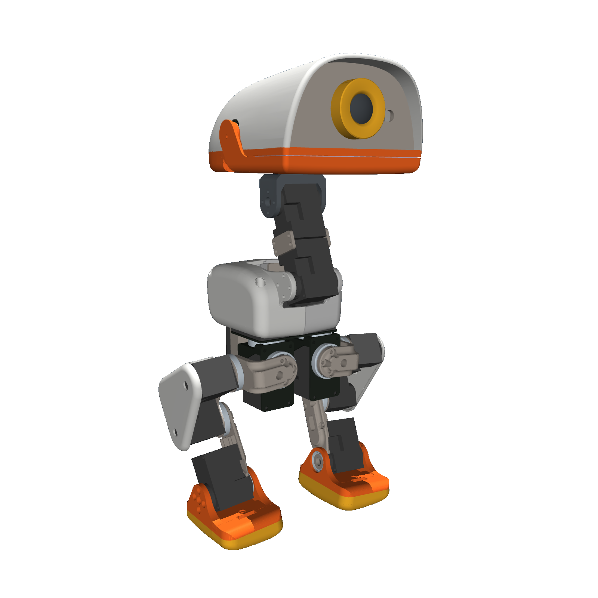
읽기 전에MICRODUCK 조립 가이드표기법
이 가이드 읽는 법
부품 색
이전 단계에서 조립됨
출력물 PETG (이번 단계)
출력물 TPU 95A
XL330 서보
알루미늄 판재
베어링
전자부품
나사 색 (그림에서 구멍 밖으로 빼서 그림, 회색 선 = 들어갈 자리)
M2×4
M2×5
M2×6
M2×8
M2.5×6
다리 단계 (1–4)
그림은 왼쪽 다리만 보여 준다. 오른쪽은 대칭으로 같은 순서다. 하드웨어 수량은 양쪽 합계다.
오른쪽 부품 이름: ankle_right · foot_right · sole_right · upper_leg_right · hip_l(동일) · yaw2roll(동일).
좌표
X = 앞, Y = 왼쪽, Z = 위. 모든 그림은 관절각 0° 자세(다리 일자, 머리 정면)다.
조립 3원칙
① 서보를 0°에서 조립한다. 혼으로 부품을 고정하기 전에 서보를 위치 2048(0°)로 보낸다.
런타임은 각도 = 위치 / 4096 · 2π − π로 읽는다. 다른 각도에서 붙이면 정책이 그만큼 틀어진 자세로 걷는다.
② 무릎만 −45° 오프셋. 무릎(ID 13, 23)에 homing_offset = −512를 먼저 쓰고 2048로 보낸다.
이때 혼이 45° 돌아가 있고, 정강이 볼트 구멍이 그 각도에 맞춰져 있다.
③ 나사는 플라스틱에 탭을 내며 들어간다. 너트·인서트 없이 XL330 본체 또는 출력물 구멍(Ø1.6, Ø2.0)에 바로 체결한다.
끝까지 조인 뒤 1/8바퀴 더 돌리지 말 것 — 출력물 나사산이 뭉개진다.
공구
육각 렌치 1.5 mm (M2 SHCS) · 2.0 mm (M2.5 SHCS)
십자 PH0 / PH1 (XL330 동봉 탭볼트)
U2D2 또는 CP2102 + 반이중 회로 (서보 설정)
순간접착제, 핀셋, 니퍼, 캘리퍼
lsk0522/microduck · docs/assembly · 비공식 · 원본 CAD 기반 추정2 / 35
하드웨어MICRODUCK 조립 가이드실제 크기 (1:1)
하드웨어 레퍼런스 — 1:1
100 % 배율(맞춤 없음)로 인쇄하면 실제 크기다. 나사를 종이 위에 대 보고 길이를 확인한다.
길이 = 머리 아래부터 끝까지.
M2×4 SHCS
PH 탭볼트
M2×5 SHCS
PH 탭볼트
M2×6 SHCS
PH 탭볼트
M2×8 SHCS
PH 탭볼트
M2.5×6 SHCS
PH 탭볼트
10 mm 눈금
베어링 — 1:1
16×22×4 ×11 (SMR2216ZZ)
10×15×3 ×3
머리 형태
SHCS (육각 구멍 볼트, DIN 912): 카운터보어(Ø4.4·4.84 / M2.5 Ø5.5)가 있는 자리. 머리가 묻힌다. PH 탭볼트: XL330에 동봉된 볼트(PHS). 카운터보어 없는 자리. 머리 Ø3.5–4라 Ø4.4 카운터보어에도 들어간다.
XL330 1개당 동봉: M2×6 탭볼트 6개(혼용) + M2×8 탭볼트 10개(프레임용).
15개면 M2×6 90개, M2×8 150개 — 이 가이드의 M2 체결은 M2×4 4개를 빼고 전부 동봉 볼트로 된다.
lsk0522/microduck · docs/assembly · 비공식 · 원본 CAD 기반 추정3 / 35
BOMMICRODUCK 조립 가이드부품 목록
하드웨어 BOM (총 126개, 계산값)
규격
수량
머리
체결 대상
조달
단계
M2×4
4
BHCS 4
printed tap 4
별도 구매 (동봉 볼트는 길어서 바닥에 닿음)
7
M2×5
10
BHCS 2, SHCS 8
printed tap 2, XL330 horn 8
XL330 동봉 탭볼트 (M2×6만 8, 6·8 모두 2)
2, 8
M2×6
83
BHCS 40, SHCS 43
XL330 frame 33, XL330 horn 48, printed tap 2
XL330 동봉 탭볼트 (M2×6만 2, 6·8 모두 81)
1, 3, 4, 5, 6, 7, 8, 9, 10, 11, 12
M2×8
18
BHCS 14, SHCS 4
XL330 horn 12, XL330 frame 6
XL330 동봉 탭볼트 (M2×8만 12, 6·8 모두 6)
2, 8, 10, 11, 16
M2.5×6
11
BHCS 8, SHCS 3
printed tap 11
별도 구매
13, 14, 15
수량은 원본 CAD에서 계산한 최소량이다. 구매·분실 대비 20 % 이상 여유를 둔다.
체결 대상: XL330 frame = 서보 본체 관통 구멍(Ø2.0, 양쪽에서 짧게) · XL330 horn = 혼/뒷면 보스(Ø1.6, 깊이 6 mm) · printed tap = 출력물 탭 구멍.
그 외 기구·구동
품목
수량
비고
XL330-M288-T
15
다리 10 · 목/머리 4 · 부리 1
베어링 16×22×4
11
몸통 2 · 다리 3×2 · 목/머리 3
베어링 10×15×3
3
발목 2 · 머리 1
bearing_roll (알루미늄 1 mm)
2
DXF: cad/plates/dynamixel
neck (알루미늄 2 mm)
2
DXF: cad/plates/dynamixel
trunk_base (알루미늄 1 mm)
1
DXF: cad/plates/dynamixel
upper_leg_rigidity_plate (알루미늄 1 mm)
2
DXF: cad/plates/dynamixel
M2.5 스페이서 (보드↔HAT)
4
확인 필요 — HAT에 Ø2.7 4개
버스 케이블 X3P 180 mm
16
서보 동봉 15 + 추가 1
버스 케이블 JST EH 3핀 250 mm
1
30 → 허브 (경로 최대 156 mm)
전자·전원
품목
수량
비고
Radxa Zero 3W
1
머리 안 (모델은 Pi Zero 2W 자리표시자)
HAT PCB (반이중 버스·전원)
1
hardware/hat
IMU 브리지 (LSM6DSV16X + MCU)
1
버스 ID 200 — firmware/imu_to_dxl
NP-F550 배터리 + 플레이트
1
몸통 power_support
버스 허브(3핀 ×4) · 퓨즈 5 A · 스위치 · XT30
각 1
몸통 전원부 위
IMX219 + M12 렌즈, 스피커, ToF
각 1
오리지널 구성
출력물
29
다음 페이지
가격·구매처: bom/BOM.xlsx
lsk0522/microduck · docs/assembly · 비공식 · 원본 CAD 기반 추정4 / 35
BOMMICRODUCK 조립 가이드출력물·판재
출력물 · 판재 (29개 출력 + 판재 7장)
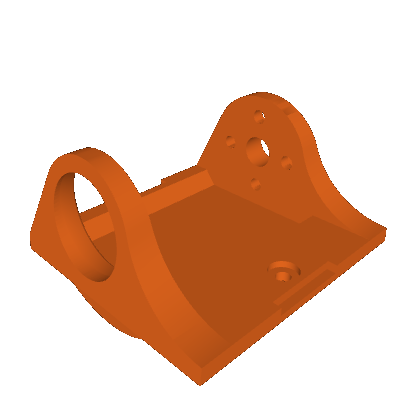
ankle_left×1 · PETG 또는 PLA+
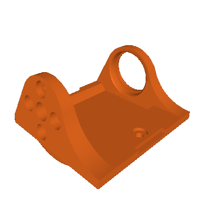
ankle_right×1 · PETG 또는 PLA+
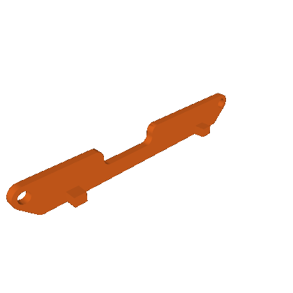
banana_pcb_locker×1 · PETG 또는 PLA+
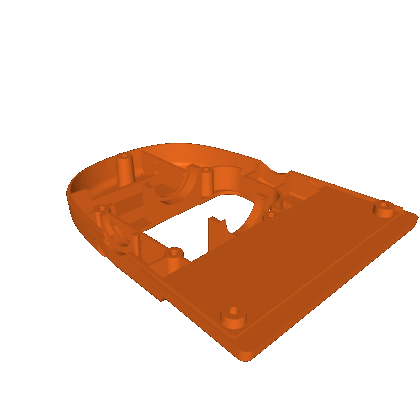
bottom_head_shell×1 · PETG 또는 PLA+
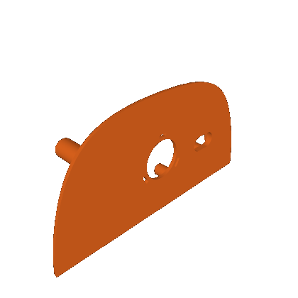
face_part×1 · PETG 또는 PLA+
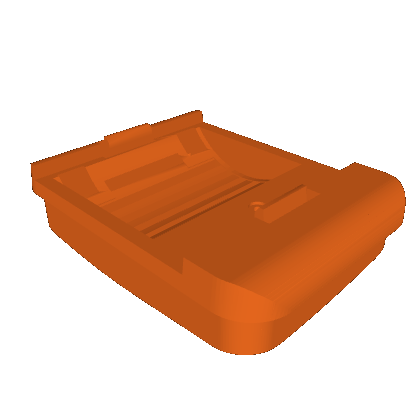
foot_left×1 · PETG 또는 PLA+
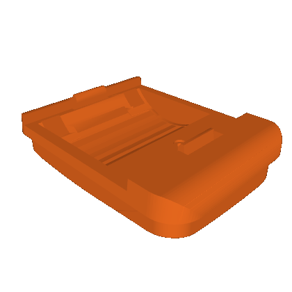
foot_right×1 · PETG 또는 PLA+
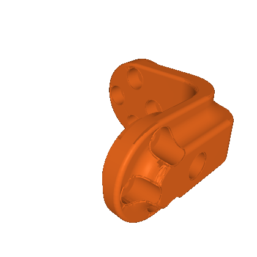
hip_l×2 · PETG 또는 PLA+
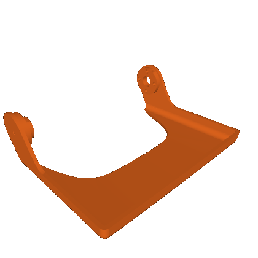
jaw×1 · PETG 또는 PLA+
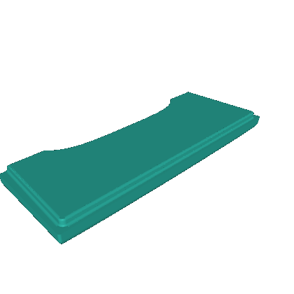
jaw_soft×1 · TPU 95A
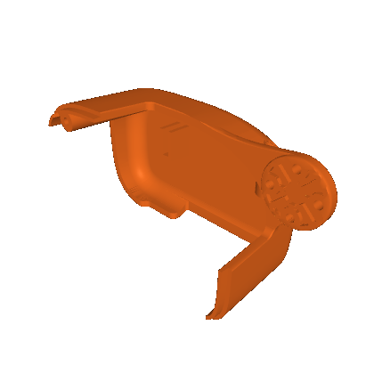
left_shell×1 · PETG 또는 PLA+
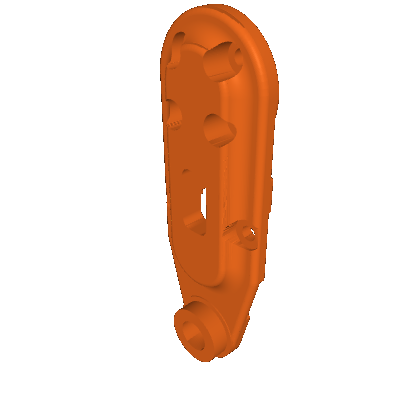
leg×2 · PETG 또는 PLA+
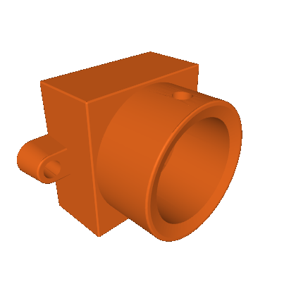
m12_lens_holder×1 · PETG 또는 PLA+
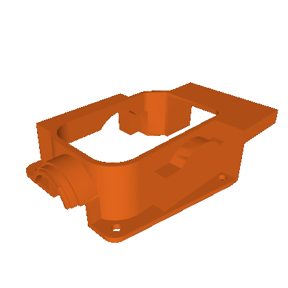
motor_support×1 · PETG 또는 PLA+
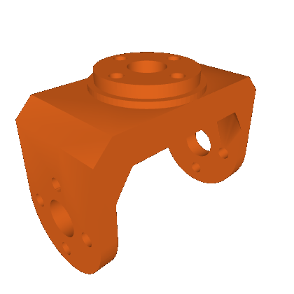
neck_pitch×1 · PETG 또는 PLA+
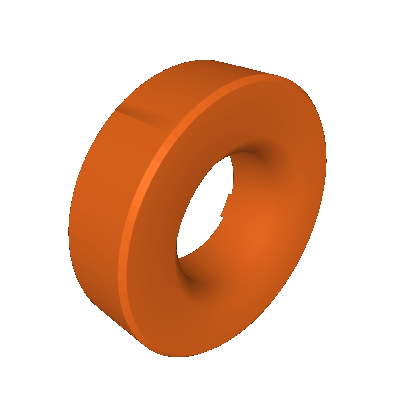
noenoeil×1 · PETG 또는 PLA+
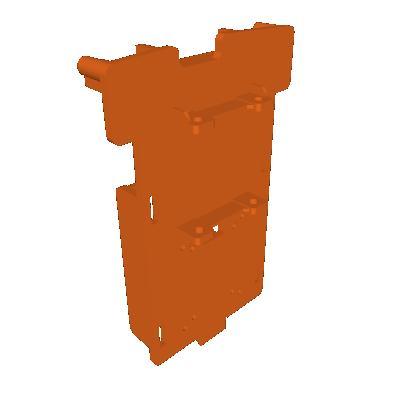
power_support×1 · PETG 또는 PLA+
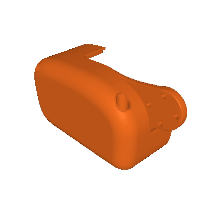
right_shell×1 · PETG 또는 PLA+
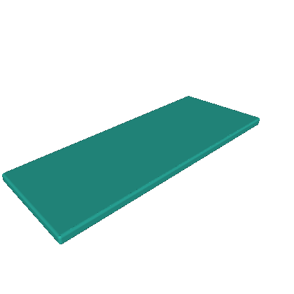
soft_mouth_top×1 · TPU 95A
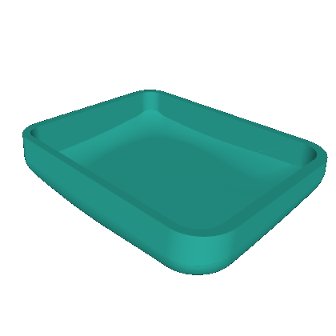
sole_left×1 · TPU 95A
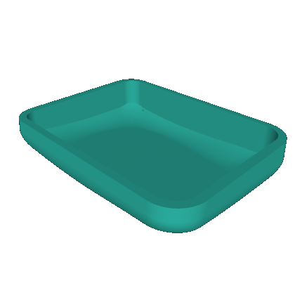
sole_right×1 · TPU 95A
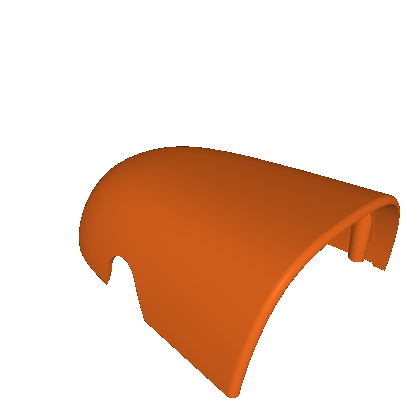
top_head_shell×1 · PETG 또는 PLA+
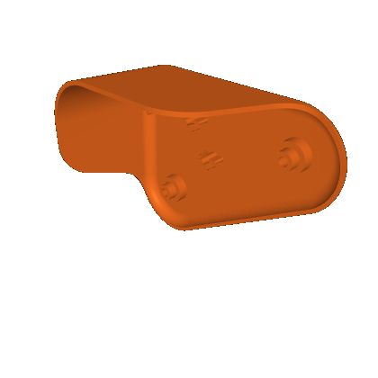
upper_leg_left×1 · PETG 또는 PLA+
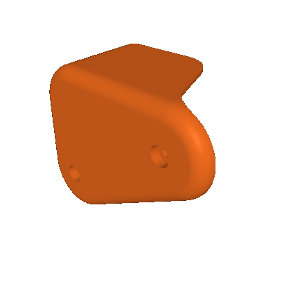
upper_leg_right×1 · PETG 또는 PLA+
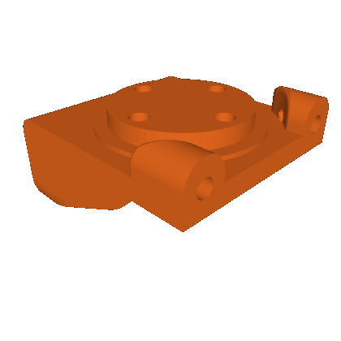
yaw2roll×2 · PETG 또는 PLA+
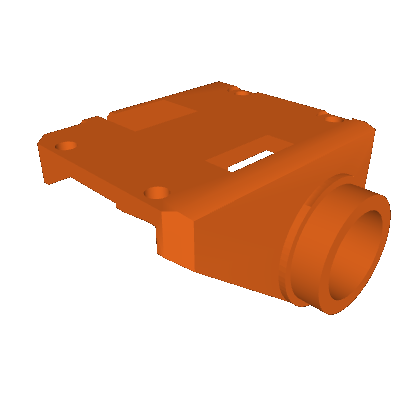
yaw_roll_motion×1 · PETG 또는 PLA+
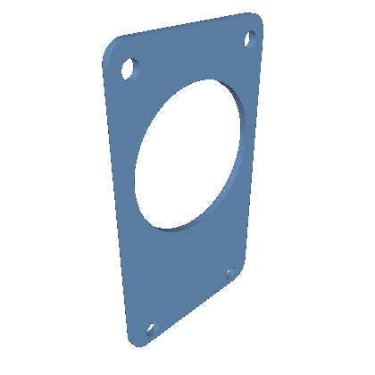
bearing_roll×2 · 알루미늄 1 mm
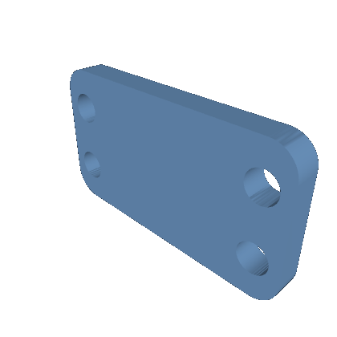
neck×2 · 알루미늄 2 mm
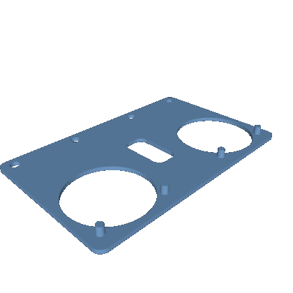
trunk_base×1 · 알루미늄 1 mm
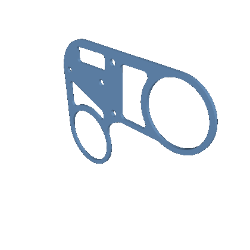
upper_leg_rigidity_plate×2 · 알루미늄 1 mm
원본 STL은 시뮬레이션용으로 단순화돼 있다. 구멍을 슬라이서에서 확인하고 한 개씩 시험 출력할 것.
PETG 인필 30–40 %, 벽 3–4줄, 관절부 100 %. 롤러 옵션 부품(roller_blade, rim, tire, ankle_*_v1)은 제외.
lsk0522/microduck · docs/assembly · 비공식 · 원본 CAD 기반 추정5 / 35
준비MICRODUCK 조립 가이드서보 설정
0단계 — 서보 15개 설정 (조립 전)
U2D2(또는 CP2102+반이중 회로) + DYNAMIXEL Wizard 2.0으로 한 개씩 연결해 설정하고, 서보에 ID 라벨을 붙인다.
레지스터
값
이유
펌웨어
v46 이상
Fast Sync Read(0x8A) 필요
ID
오른쪽 표
공장값 1
Baud Rate
3 (1 Mbps)
공장값 57,600
Return Delay Time
0
공장값 250 → 틱의 40 % 낭비
PWM Slope
255
Shutdown
52
입력전압 보호 비트 해제 (2S 직결 시)
Homing Offset
무릎 −512, 나머지 0
정책 전제
설정이 끝나면 각 서보를 2048로 보내고 토크를 끈다. 조립 중 혼을 손으로 돌리지 말 것 — 돌렸으면 다시 2048로.
런타임(robotd)은 시작할 때 이 값을 검사하고 고친다. 그래도 조립 전에 맞춰 두면 혼 각도를 바로 잡을 수 있다.
lsk0522/microduck · docs/assembly · 비공식 · 원본 CAD 기반 추정6 / 35
준비MICRODUCK 조립 가이드서보 원점·장착 방향
서보 원점(2048)과 장착 방향
ID
관절
혼이 향하는 쪽
서보 몸체
+ 방향이면
가동 범위
Homing
기본 자세 (위치값)
20
왼 고관절 요
−Z (아래) (✓)
고정
발끝이 오른쪽으로 돈다
-25 … +30°
0
+0.0° (2048)
21
왼 고관절 롤
+X (앞) (✓)
고정
발이 왼쪽으로
-22 … +22°
0
-5.0° (1991)
22
왼 고관절 피치
−Y (오른쪽) (✓)
같이 돎
발이 뒤로
-90 … +90°
0
-26.2° (1749)
23
왼 무릎
−Y (오른쪽) (✓)
고정
발이 앞으로
-90 … +90°
−512
-0.3° (2045)
24
왼 발목
+Y (왼쪽) (✓)
고정
발끝이 아래로
-90 … +90°
0
+26.0° (2343)
10
오른 고관절 요
−Z (아래) (✓)
고정
발끝이 오른쪽으로 돈다
-30 … +25°
0
+0.0° (2048)
11
오른 고관절 롤
+X (앞) (✓)
고정
발이 왼쪽으로
-22 … +22°
0
+5.0° (2105)
12
오른 고관절 피치
+Y (왼쪽) (✓)
같이 돎
발이 앞으로
-90 … +90°
0
+26.2° (2347)
13
오른 무릎
+Y (왼쪽) (✓)
고정
발이 뒤로
-90 … +90°
−512
+0.3° (2051)
14
오른 발목
−Y (오른쪽) (✓)
고정
발끝이 위로
-90 … +90°
0
-26.0° (1753)
30
목 피치
+Y (왼쪽) (규칙)
같이 돎
부리가 뒤로
-90 … +60°
0
+20.0° (2276)
31
머리 피치
+Y (왼쪽) (규칙)
고정
부리가 아래로
-90 … +90°
0
+20.0° (2276)
32
머리 요
−Z (아래) (✓)
같이 돎
얼굴이 왼쪽으로 돈다
-170 … +170°
0
+0.0° (2048)
33
머리 롤
+X (앞) (✓)
같이 돎
머리 윗부분이 왼쪽으로 기운다
-25 … +25°
0
+0.0° (2048)
34
부리
+Y (왼쪽) (기하)
—
부리가 열린다 (닫힘 −5°, 최대 +30°)
-5 … +30°
0
+0.0° (2048)
혼 방향 ✓ = 혼 나사가 한쪽에만 있어 모델 형상으로 확인됨 (12/12 규칙과 일치). 규칙 = 양쪽에 U자 브래킷이라 형상만으로는 구분 불가 → 아래 규칙으로 정함.
기하 = 부리 관절은 모델에 없어 부리 나사 위치로 판단. 가동 범위는 MJCF 값. 기본 자세 = Pollen 런타임 DEFAULT_POSITION (정책이 서 있는 자세).
원점 = 위치 2048 = 관절각 0 = CAD 조립 자세. Pollen 런타임은 각도 = 2π·위치/4096 − π로 읽고,
관절마다 부호를 바꾸지 않는다. 그래서 모든 서보는 2048일 때 원점 자세 그림(다음 쪽)과 똑같은 모양으로 부품을 붙인다.
+ 방향 = 혼을 마주 보고 반시계(CCW) (Drive Mode 0, 공장값). 이것이 모델 관절 축의 + 회전과 같아야 한다.
→ 서보 몸체가 고정 쪽이면 혼이 관절 축 방향을, 몸체가 같이 도는 쪽이면 반대 방향을 향한다. 위 표의 '혼이 향하는 쪽'이 그 결과다.
서보를 거꾸로 끼우면 그 관절만 방향이 반대가 되고, 정책이 바로 넘어진다.
무릎(13, 23): Homing Offset −512를 먼저 쓴다. Present = Actual + Offset이라 2048을 보내면 실제 축은 2560(+45°)에 간다.
정강이 구멍이 이 각도에 맞춰져 있다 (검증: 정강이 구멍을 45° 돌리면 혼 구멍 4개와 정확히 겹침).
혼 구멍은 90° 간격 4개라 끼울 수 있는 각도가 4가지뿐이다. 2048에서 그림과 맞는 것이 하나 — 90° 틀리면 눈에 보인다.
45°(무릎 오프셋 누락)는 아예 구멍이 안 맞는다.
lsk0522/microduck · docs/assembly · 비공식 · 원본 CAD 기반 추정7 / 35
준비MICRODUCK 조립 가이드원점 맞추기 A·B·C
원점 맞추기 — 서보를 2048에 두고 홈을 본다
ID
관절
원점
위 홈이 보는 쪽
20
왼 고관절 요
A
앞
21
왼 고관절 롤
A
위
22
왼 고관절 피치
A
앞
23
왼 무릎
B
아래
24
왼 발목
A
아래
30
목 피치
A
아래
31
머리 피치
A
위
32
머리 요
A
왼쪽
ID
관절
원점
위 홈이 보는 쪽
10
오른 고관절 요
A
앞
11
오른 고관절 롤
A
위
12
오른 고관절 피치
A
앞
13
오른 무릎
B
아래
14
오른 발목
A
아래
33
머리 롤
A
왼쪽
34
부리
A
뒤
순서
dxl_zero.py zero → 2048, 토크 켬
표의 글자(A/B)와 그림이 같은지 본다. C면 다시
'위 홈이 보는 쪽'이 로봇의 그 방향을 보게 서보를 넣는다
원점 자세 그림처럼 부품을 대고 혼 볼트
위 홈 = 케이스 끝면 가운데의 세로 홈(커넥터 반대쪽 끝). 방향은 로봇 기준 (앞 = 부리 쪽).
"홈 한 줄 = 2048"은 서보를 받으면 한 번 확인 — 어긋나면 2048을 기준으로 한다.
lsk0522/microduck · docs/assembly · 비공식 · 원본 CAD 기반 추정8 / 35
준비MICRODUCK 조립 가이드원점 자세 그림
원점 자세 — 서보가 모두 2048일 때 로봇 모양
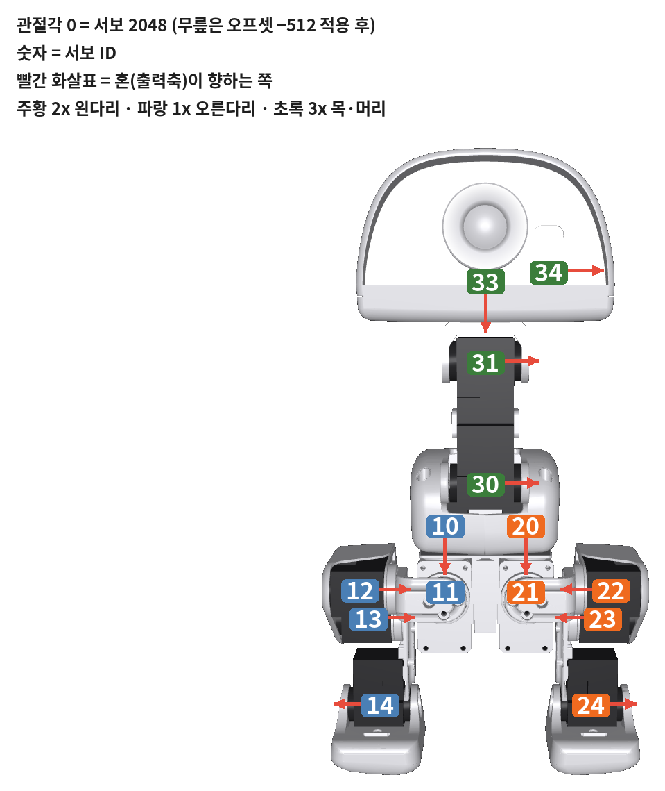
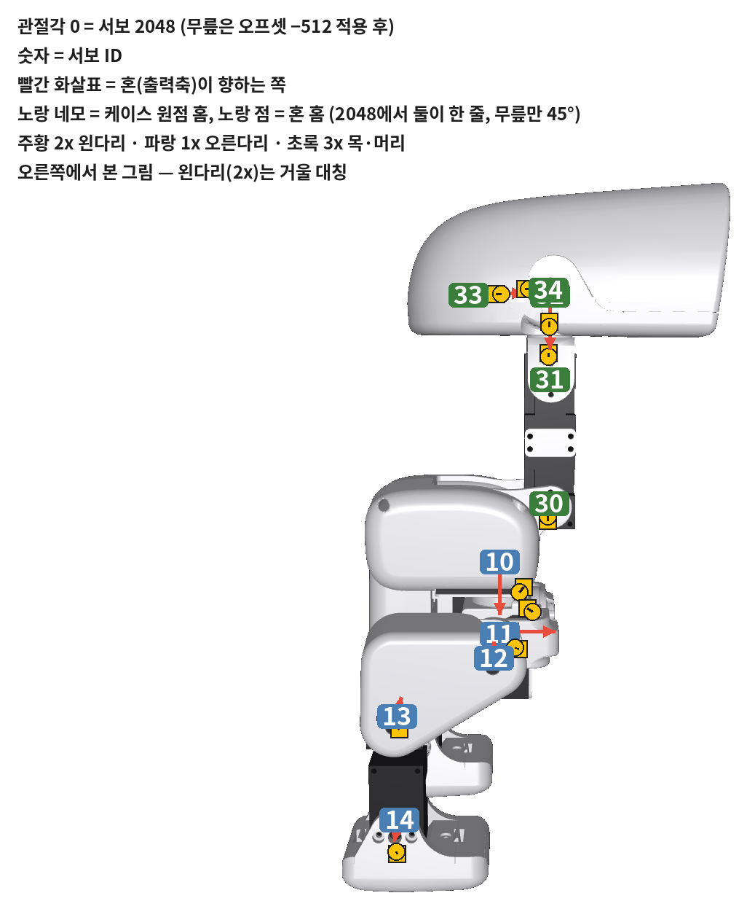
다리는 곧게 아래로, 발판은 바닥과 평행, 목·머리는 수직. 부리 서보 0°는 닫힘(−5°)보다 5° 열린 위치.
MuJoCo 뷰어에서 키프레임 INIT을 고르면 같은 자세를 돌려 볼 수 있다 (START_HERE 1번).
lsk0522/microduck · docs/assembly · 비공식 · 원본 CAD 기반 추정9 / 35
준비MICRODUCK 조립 가이드장착 절차·기본 자세
서보를 원점에 두고 장착하는 순서
서보 1개씩 설정 (0단계 표): dxl_zero.py setup --port COM5 --new-id 23 ID·1 Mbps·return delay 0·PWM slope 255·shutdown 52·무릎 homing −512를 한 번에 쓴다.
원점으로 보내고 토크를 켠 채 둔다: dxl_zero.py zero --port COM5 --ids 23 토크가 켜져 있으면 나사를 조일 때 혼이 돌아가지 않는다. 벤치 전원은 5 V로 충분.
표의 혼 방향대로 서보를 프레임에 넣는다 (프레임 볼트). 원점 A/B(8쪽 그림)와 같은지, 위 홈이 표의 방향인지 본다.
원점 자세 그림처럼 자식 부품을 대고, 혼 구멍 4개 중 맞는 각도로 혼 볼트를 조인다.
dxl_zero.py off 후 손으로 관절을 끝까지 돌려 가동 범위 안에서 걸림·케이블 당김이 없는지 본다.
다 조립하면 끈으로 매단 상태에서 dxl_zero.py zero --all → 원점 그림과 비교,
그다음 dxl_zero.py home --all → 오른쪽 기본 자세와 비교.
마지막으로 robotctl monitor에서 관절을 손으로 + 방향(표)으로 밀어 부호를 확인한다.
도중에 토크를 끄고 혼을 돌렸다면 그 서보는 다시 zero. 원점 1° 오차는 고관절에서 발까지(95 mm) 약 1.7 mm다.
스크립트: docs/assembly/tools/dxl_zero.py (pip install dynamixel-sdk, U2D2 또는 USB-TTL 반이중).
실물에서 아직 돌려 보지 않았다 — 서보 1개로 먼저 시험. DYNAMIXEL Wizard 2.0으로 같은 값을 써도 된다.
기본 자세 (정책이 서 있는 자세)
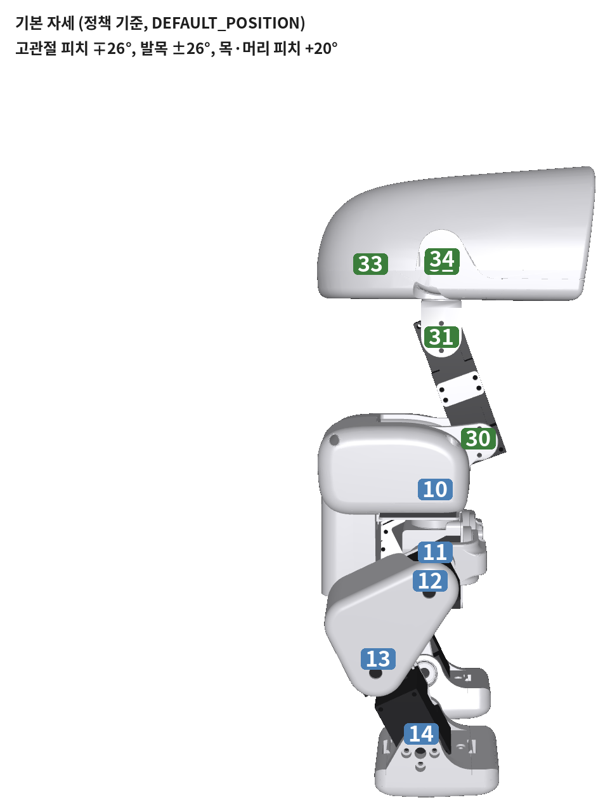
원점과 다르다: 고관절 피치 ∓26°, 발목 ±26°, 고관절 롤 ∓5°, 목·머리 피치 +20°.
정책은 이 자세를 기준(0)으로 관측하고 움직인다 — 조립은 원점에서, 서기는 기본 자세에서.
lsk0522/microduck · docs/assembly · 비공식 · 원본 CAD 기반 추정10 / 35
다리 ×2MICRODUCK 조립 가이드STEP 1 / 16
01×2 · 왼쪽 그림, 수량은 양쪽 합
발 (발목 브래킷 + 발판 + 밑창)
부품
ankle_left / ankle_right
foot_left / foot_right
sole_left / sole_right (TPU)
베어링 10×15×3
하드웨어 (계산 길이)
M2×6×2 XL330 동봉 탭볼트 (M2×6만 2)
밑창(TPU)은 발판 아래에 붙인다 (원본 모델에 체결 구멍 없음 — 순간접착제 또는 양면테이프).
베어링 10×15×3은 발목 브래킷의 베어링 자리에 압입한다. 헐거우면 순간접착제 한 방울.
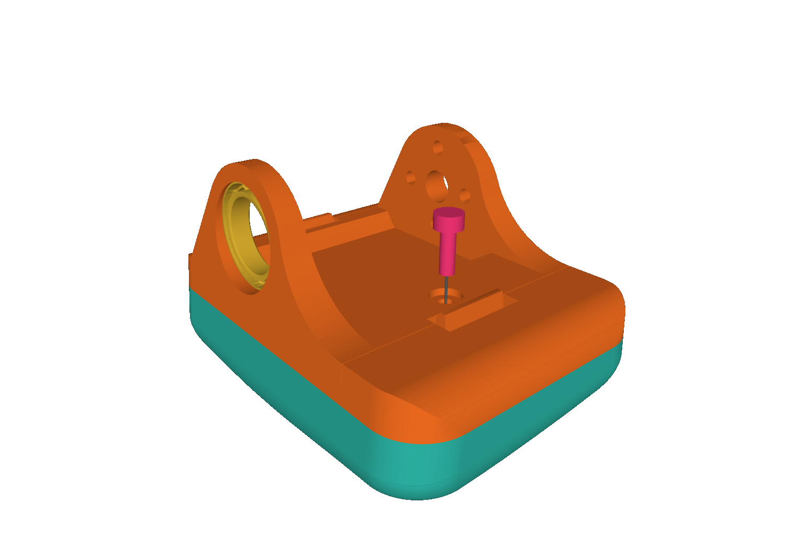
lsk0522/microduck · docs/assembly · 비공식 · 원본 CAD 기반 추정11 / 35
다리 ×2MICRODUCK 조립 가이드STEP 2 / 16
02×2 · 왼쪽 그림, 수량은 양쪽 합
정강이 + 발목 서보
부품
leg ×1
XL330 (발목 ID 24 / 14)
하드웨어 (계산 길이)
M2×5×8 XL330 동봉 탭볼트 (M2×6만 8)
M2×8×4 XL330 동봉 탭볼트 (6·8 모두 4)
다이나믹셀 — 2048(토크 켬)에 두고 체결
24 / 14 발목 서보 장착 + 혼 고정 2048 · 혼 → 24: 왼쪽 / 14: 오른쪽 + = 24: 발끝이 아래로 / 14: 발끝이 위로 원점 24: A, 위 홈 → 아래 / 14: A, 위 홈 → 아래
원점 A = 홈 한 줄, B = 혼 홈 왼쪽 45° (무릎) — 8쪽 그림
발목 서보를 정강이(leg)에 끼우고 프레임 볼트로 고정한다.
서보를 2048(0°)에 둔 상태에서 발이 정강이와 직각이 되게 혼에 발목 브래킷을 고정한다.
케이블 · 23→24 (13→14) 케이블을 발목 서보에 먼저 꽂는다. 무릎을 끝까지 굽히면 끝면 앞 굽힘 칸이 79 % 가려지니 무릎 축 쪽으로 고리를 남긴다.
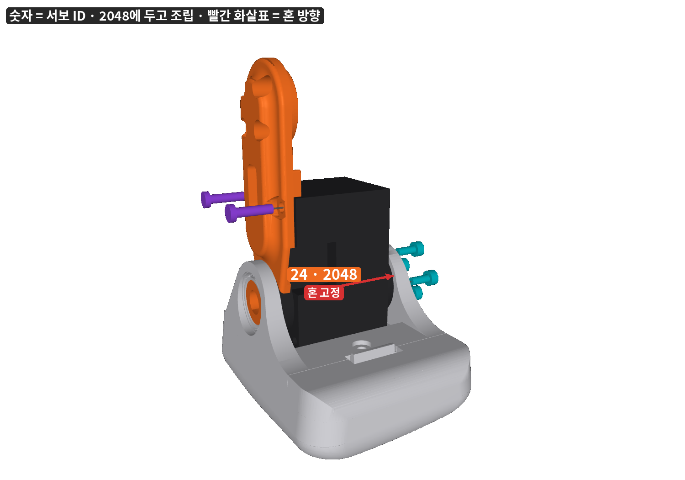
lsk0522/microduck · docs/assembly · 비공식 · 원본 CAD 기반 추정12 / 35
다리 ×2MICRODUCK 조립 가이드STEP 3 / 16
03×2 · 왼쪽 그림, 수량은 양쪽 합
허벅지 (고관절 피치 + 무릎 서보, 보강판)
부품
upper_leg_left / upper_leg_right
upper_leg_rigidity_plate (알루미늄 1 mm) ×1
XL330 (고관절 피치 ID 22 / 12, 무릎 ID 23 / 13)
베어링 16×22×4
하드웨어 (계산 길이)
M2×6×16 XL330 동봉 탭볼트 (6·8 모두 16)
다이나믹셀 — 2048(토크 켬)에 두고 체결
22 / 12 고관절 피치 서보 장착 2048 · 혼 → 22: 오른쪽 / 12: 왼쪽 + = 22: 발이 뒤로 / 12: 발이 앞으로 원점 22: A, 위 홈 → 앞 / 12: A, 위 홈 → 앞
23 / 13 무릎 서보 장착 + 혼 고정 2048 (homing −512 먼저) · 혼 → 23: 오른쪽 / 13: 왼쪽 + = 23: 발이 앞으로 / 13: 발이 뒤로 원점 23: B, 위 홈 → 아래 / 13: B, 위 홈 → 아래
원점 A = 홈 한 줄, B = 혼 홈 왼쪽 45° (무릎) — 8쪽 그림
⚠ 무릎 서보: homing_offset = −512 (−45°)를 먼저 써 둔다. 그 상태에서 2048로 보내면 혼이 45° 돌아간다 — 정강이의 볼트 구멍은 이 각도에 맞춰져 있다 (검증: 정강이 구멍을 무릎 축으로 45° 돌리면 혼 구멍 4개와 정확히 겹침).
무릎 혼 ↔ 정강이: M2×6 ×4, 정강이 안쪽 카운터보어(Ø4.4)에서 바깥쪽으로. 물림 3.2 mm.
보강판은 허벅지 옆면(Y ≈ ±43 mm)에 대고 두 서보의 프레임에 고정한다. 큰 구멍 Ø19 두 개가 고관절 피치·무릎 축과 동심 (축간 42.0 mm).
케이블 · 서보를 넣기 전에 22·23(12·13)에 케이블을 꽂는다 — 넣은 뒤엔 무릎 서보가 22 커넥터 앞을 47 % 막는다.
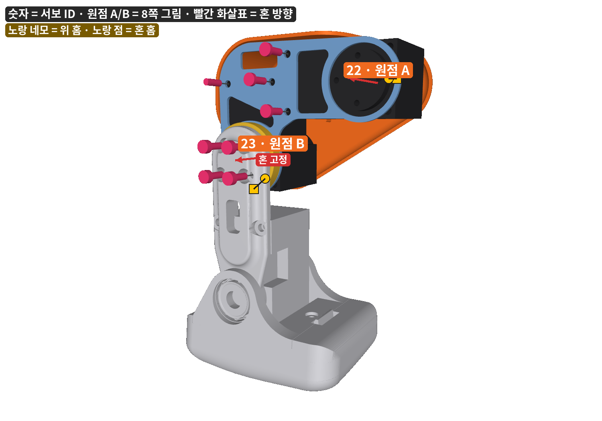
lsk0522/microduck · docs/assembly · 비공식 · 원본 CAD 기반 추정13 / 35
다리 ×2MICRODUCK 조립 가이드STEP 4 / 16
04×2 · 왼쪽 그림, 수량은 양쪽 합
고관절 링크 (hip_l)
부품
hip_l ×1
베어링 16×22×4
하드웨어 (계산 길이)
M2×6×8 XL330 동봉 탭볼트 (6·8 모두 8)
다이나믹셀 — 2048(토크 켬)에 두고 체결
22 / 12 고관절 피치 혼 고정 2048 · 혼 → 22: 오른쪽 / 12: 왼쪽 + = 22: 발이 뒤로 / 12: 발이 앞으로 원점 22: A, 위 홈 → 앞 / 12: A, 위 홈 → 앞
원점 A = 홈 한 줄, B = 혼 홈 왼쪽 45° (무릎) — 8쪽 그림
hip_l을 고관절 피치 서보 혼에 고정한다 (서보 2048, 다리가 일자로 아래를 향한 자세).
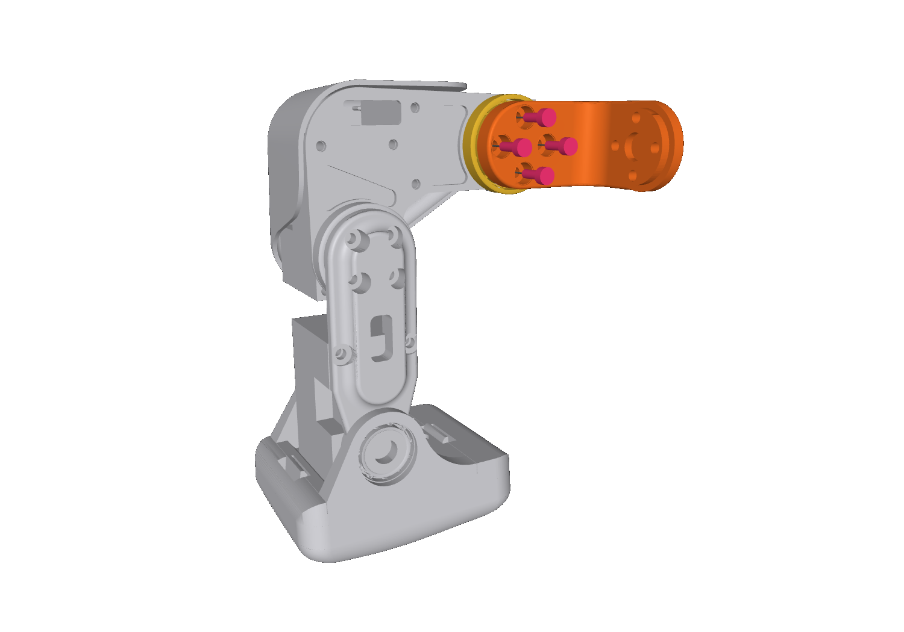
lsk0522/microduck · docs/assembly · 비공식 · 원본 CAD 기반 추정14 / 35
몸통MICRODUCK 조립 가이드STEP 5 / 16
05
몸통 바닥판 + 고관절 요 서보 ×2
부품
trunk_base 바닥판 (알루미늄 1 mm)
XL330 ×2 (고관절 요 ID 20 / 10)
베어링 16×22×4 ×2
하드웨어 (계산 길이)
M2×6×2 XL330 동봉 탭볼트 (6·8 모두 2)
다이나믹셀 — 2048(토크 켬)에 두고 체결
20 / 10 고관절 요 서보 장착 2048 · 혼 → 20: 아래 / 10: 아래 + = 20: 발끝이 오른쪽으로 돈다 / 10: 발끝이 오른쪽으로 돈다 원점 20: A, 위 홈 → 앞 / 10: A, 위 홈 → 앞
원점 A = 홈 한 줄, B = 혼 홈 왼쪽 45° (무릎) — 8쪽 그림
바닥판 큰 구멍 2개(Ø19)가 좌·우 고관절 요 축이다. 서보 출력축이 구멍 아래로 오게 놓는다.
이 단계에선 서보당 프레임 볼트 1개만 들어간다. 나머지는 8단계(전원부) 볼트가 함께 잡는다 — 6·7단계에서 혼을 조일 때 서보를 손으로 받친다.
⚠ 전원부(power_support·배터리)는 아직 달지 않는다 — 7단계 롤 서보 볼트의 공구 경로를 막는다 (검증 T5).
케이블 · 고관절 요 서보(20 / 10)에 허브→20·20→21을 지금 꽂아 둔다 — 8단계에 배터리가 들어오면 커넥터 앞 굽힘 칸이 61 % 가려진다.
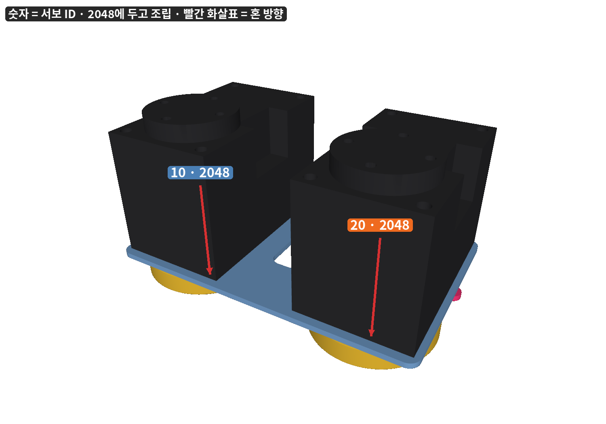
lsk0522/microduck · docs/assembly · 비공식 · 원본 CAD 기반 추정15 / 35
몸통MICRODUCK 조립 가이드STEP 6 / 16
06
요-롤 블록을 고관절 요 혼에 고정 (빈 상태로)
부품
yaw2roll ×2 (좌·우 같은 부품)
하드웨어 (계산 길이)
M2×6×8 XL330 동봉 탭볼트 (6·8 모두 8)
다이나믹셀 — 2048(토크 켬)에 두고 체결
20 / 10 고관절 요 혼 고정 2048 · 혼 → 20: 아래 / 10: 아래 + = 20: 발끝이 오른쪽으로 돈다 / 10: 발끝이 오른쪽으로 돈다 원점 20: A, 위 홈 → 앞 / 10: A, 위 홈 → 앞
원점 A = 홈 한 줄, B = 혼 홈 왼쪽 45° (무릎) — 8쪽 그림
⚠ 순서 주의: 이 나사는 yaw2roll 바닥에서 위로(+Z) 들어간다. 롤 서보를 먼저 넣으면 공구가 닿지 않으므로 yaw2roll은 빈 상태로 먼저 고정한다 (검증 T5로 확인).
양쪽 고관절 요 서보를 2048에 두고, yaw2roll의 롤 축이 정면(+X)을 향하게 맞춘다.
오른쪽 블록은 원본 모델에서 바디 이름이 bearing_roll — 부품은 yaw2roll과 같다.
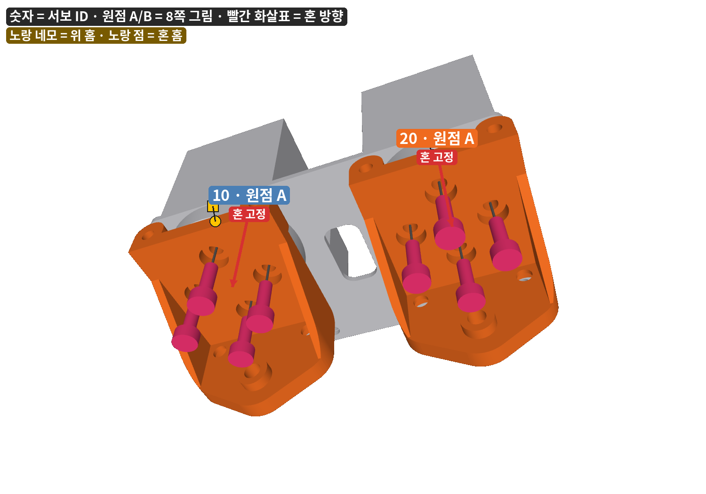
lsk0522/microduck · docs/assembly · 비공식 · 원본 CAD 기반 추정16 / 35
몸통MICRODUCK 조립 가이드STEP 7 / 16
07
고관절 롤 서보 + 롤 베어링판 → 다리 연결
부품
XL330 ×2 (고관절 롤 ID 21 / 11)
bearing_roll 판 (알루미늄 1 mm) ×2
베어링 16×22×4 ×2
1–4단계에서 만든 다리 ×2
하드웨어 (계산 길이)
M2×4×4 별도 구매 (동봉 볼트는 길어서 바닥에 닿음)
M2×6×16 XL330 동봉 탭볼트 (6·8 모두 16)
다이나믹셀 — 2048(토크 켬)에 두고 체결
21 / 11 고관절 롤 서보 장착 + 혼 고정 2048 · 혼 → 21: 앞 / 11: 앞 + = 21: 발이 왼쪽으로 / 11: 발이 왼쪽으로 원점 21: A, 위 홈 → 위 / 11: A, 위 홈 → 위
원점 A = 홈 한 줄, B = 혼 홈 왼쪽 45° (무릎) — 8쪽 그림
롤 서보를 yaw2roll에 넣고 프레임 볼트로 고정한다. 몸통 뒤쪽 볼트는 전원부가 없는 지금만 공구가 들어간다.
롤 베어링판을 몸통 앞쪽 면(X+)에 대고 판당 M2×6 ×2(서보) + M2×4 ×2(yaw2roll)로 고정한다. M2×4 자리는 Ø2.05 출력 파일럿 구멍 — 바닥까지 여유가 적으니 길이를 지킨다.
롤 서보를 2048에 두고, 다리가 수직으로 내려오게 서보 혼을 hip_l에 고정한다.
케이블 · 20→21·21→22를 롤 서보에 잇는다. 롤을 끝까지 돌리면 21→22 경로가 0°보다 38 mm 길어진다 — 그만큼 고리를 남긴다.
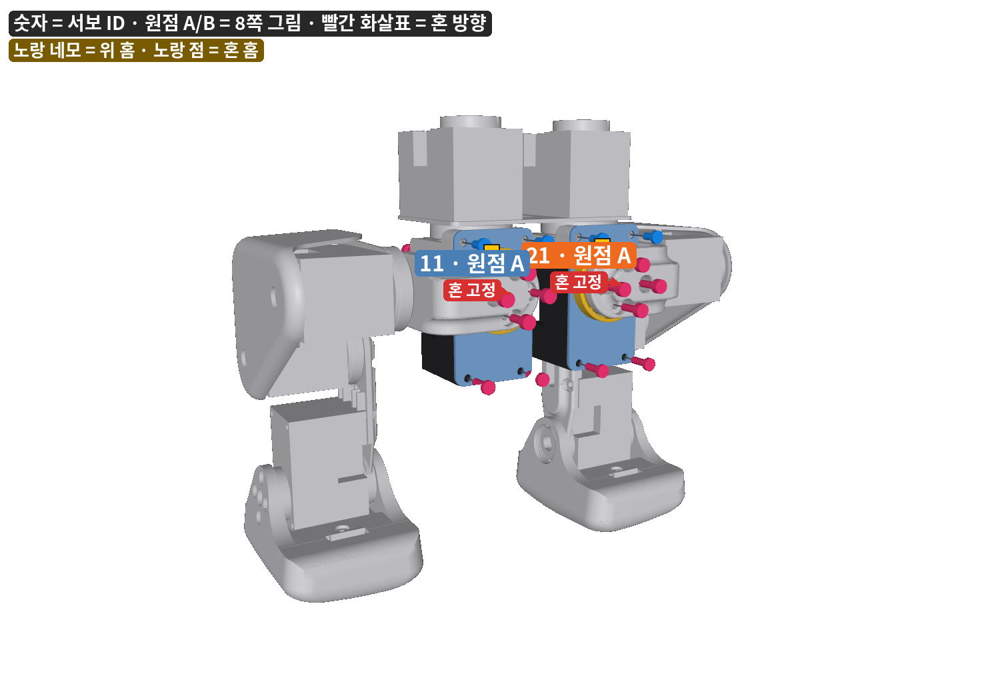
lsk0522/microduck · docs/assembly · 비공식 · 원본 CAD 기반 추정17 / 35
몸통MICRODUCK 조립 가이드STEP 8 / 16
08
전원부 (power_support + 배터리 + 바나나 잭 홀더)
부품
power_support
배터리 NP-F550 (+배터리 플레이트)
banana_pcb_locker
하드웨어 (계산 길이)
M2×5×2 XL330 동봉 탭볼트 (6·8 모두 2)
M2×6×2 XL330 동봉 탭볼트 (6·8 모두 2)
M2×8×2 XL330 동봉 탭볼트 (6·8 모두 2)
power_support의 볼트 일부는 바닥판과 고관절 요 서보를 함께 관통한다 (M2×8) — 5단계 서보 고정을 마무리한다.
IMU 브리지(버스 ID 200)는 몸통에 단다: 모델의 imu 위치 = trunk_base 기준 X −21, Y 0, Z −15 mm, 칩 축을 몸통 축과 맞춘다. 고정 구멍은 모델에 없음 — 실물 확인 (양면테이프로 흔들림 없게).
케이블 · 허브를 전원부 위(X −24, Z +15 mm)에 두고 XT30·왼다리·오른다리·IMU 브리지를 꽂은 뒤 배터리를 넣는다. 목 줄(250 mm)은 9–10단계.
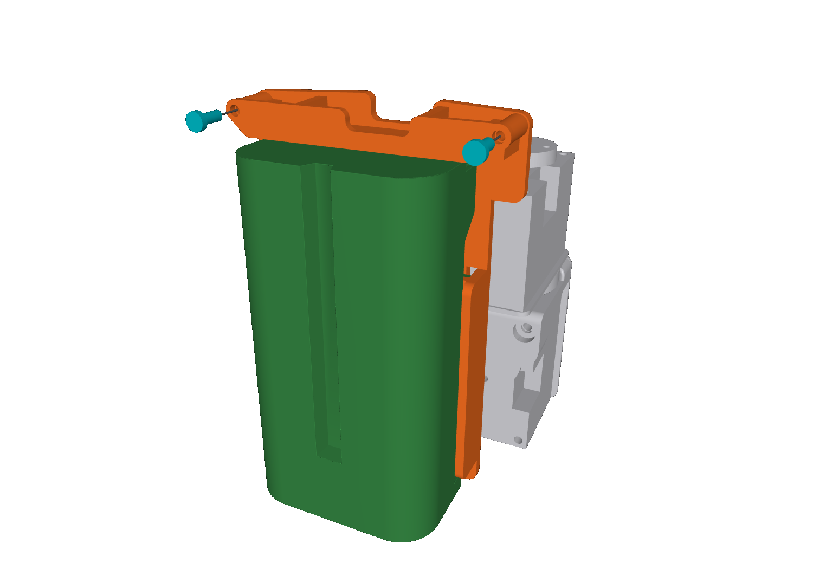
lsk0522/microduck · docs/assembly · 비공식 · 원본 CAD 기반 추정18 / 35
목·머리MICRODUCK 조립 가이드STEP 9 / 16
09
목 (목 피치 + 머리 피치 서보, 목 옆판)
부품
neck 옆판 (알루미늄 2 mm) ×2
XL330 ×2 (목 피치 ID 30, 머리 피치 ID 31)
하드웨어 (계산 길이)
M2×6×8 XL330 동봉 탭볼트 (6·8 모두 8)
다이나믹셀 — 2048(토크 켬)에 두고 체결
30 목 피치 서보 장착 2048 · 혼 → 왼쪽 + = 부리가 뒤로 원점 A, 위 홈 → 아래
31 머리 피치 서보 장착 2048 · 혼 → 왼쪽 + = 부리가 아래로 원점 A, 위 홈 → 위
원점 A = 홈 한 줄, B = 혼 홈 왼쪽 45° (무릎) — 8쪽 그림
두 서보를 옆판 2장 사이에 끼우고 양쪽에서 프레임 볼트로 고정한다 (판당 M2×6 ×4, 관통 볼트 아님).
케이블 · 옆판을 닫기 전에 31→30과 30→허브(250 mm)를 꽂는다 — 두 서보 끝면이 1 mm로 마주봐, 닫은 뒤엔 플러그 칸이 82 % 막힌다.
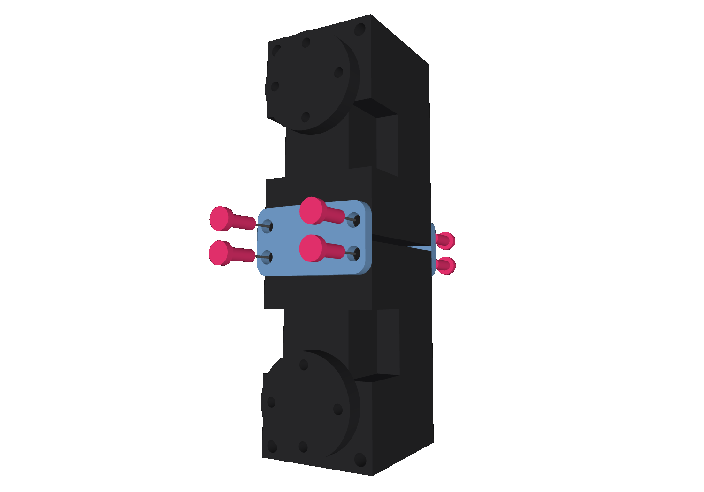
lsk0522/microduck · docs/assembly · 비공식 · 원본 CAD 기반 추정19 / 35
목·머리MICRODUCK 조립 가이드STEP 10 / 16
10
몸통 셸 + 목 장착
부품
left_shell
right_shell
하드웨어 (계산 길이)
M2×6×5 XL330 동봉 탭볼트 (6·8 모두 5)
M2×8×4 XL330 동봉 탭볼트 (M2×8만 4)
다이나믹셀 — 2048(토크 켬)에 두고 체결
30 목 피치 혼 고정 2048 · 혼 → 왼쪽 + = 부리가 뒤로 원점 A, 위 홈 → 아래
원점 A = 홈 한 줄, B = 혼 홈 왼쪽 45° (무릎) — 8쪽 그림
목 피치 서보의 혼과 뒤쪽 보스를 좌·우 셸에 고정한다 (목 피치 서보 2048).
혼 쪽 M2×6은 물림이 2.55 mm로 기준(2.5 mm)에 겨우 맞는다 — 끝까지 조이고, 헐거우면 실물 혼 구멍 깊이를 재서 M2×8(모델 깊이 기준 바닥 여유 0.65 mm)을 검토.
좌·우 셸끼리 맞물리는 자리는 모델에서 나사인지 핀인지 확인되지 않았다 — 실물 확인.
케이블 · 목을 달면서 30→허브(250 mm)를 셸 안쪽으로 내려 허브에 꽂는다. 목을 끝까지 숙여(경로 156 mm) 당기지 않는지 확인.
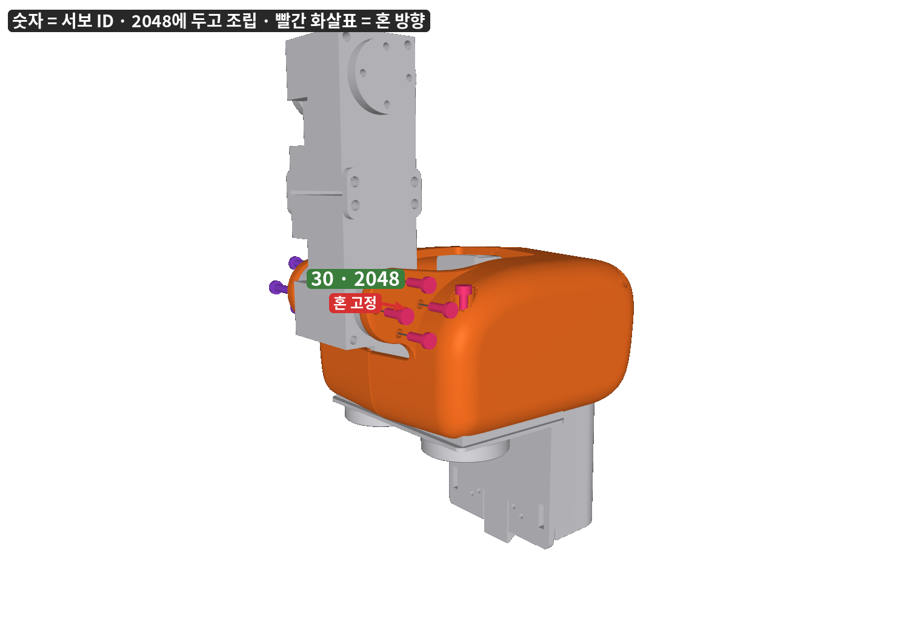
lsk0522/microduck · docs/assembly · 비공식 · 원본 CAD 기반 추정20 / 35
목·머리MICRODUCK 조립 가이드STEP 11 / 16
11
머리 요·롤 블록 서브조립 (책상 위에서)
부품
yaw_roll_motion ×1
XL330 (머리 요 ID 32, 머리 롤 ID 33)
neck_pitch ×1
베어링 16×22×4 ×3
하드웨어 (계산 길이)
M2×6×8 XL330 동봉 탭볼트 (6·8 모두 8)
M2×8×4 XL330 동봉 탭볼트 (M2×8만 4)
다이나믹셀 — 2048(토크 켬)에 두고 체결
32 머리 요 서보 장착 + 혼 고정 2048 · 혼 → 아래 + = 얼굴이 왼쪽으로 돈다 원점 A, 위 홈 → 왼쪽
33 머리 롤 서보 장착 + 혼 고정 2048 · 혼 → 앞 + = 머리 윗부분이 왼쪽으로 기운다 원점 A, 위 홈 → 왼쪽
원점 A = 홈 한 줄, B = 혼 홈 왼쪽 45° (무릎) — 8쪽 그림
⚠ 순서 (검증 T5 — 바꾸면 공구가 막힘): ① 롤 서보(33) 혼 → yaw_roll_motion M2×8 ×4, 요 서보 넣기 전 (4개 중 3개는 맞은편 벽까지 24.5 mm — 짧은 비트·ㄱ자 드라이버) ② 요 서보(32)를 yaw_roll_motion에 넣고 프레임 볼트, 베어링 압입 ③ 요 혼 → neck_pitch M2×6 ×4, 목에 달기 전 책상 위에서.
케이블 · 서브조립 때 33→32를 꽂는다. 32→31은 12단계에서 머리 피치 서보(31)로 잇는다.
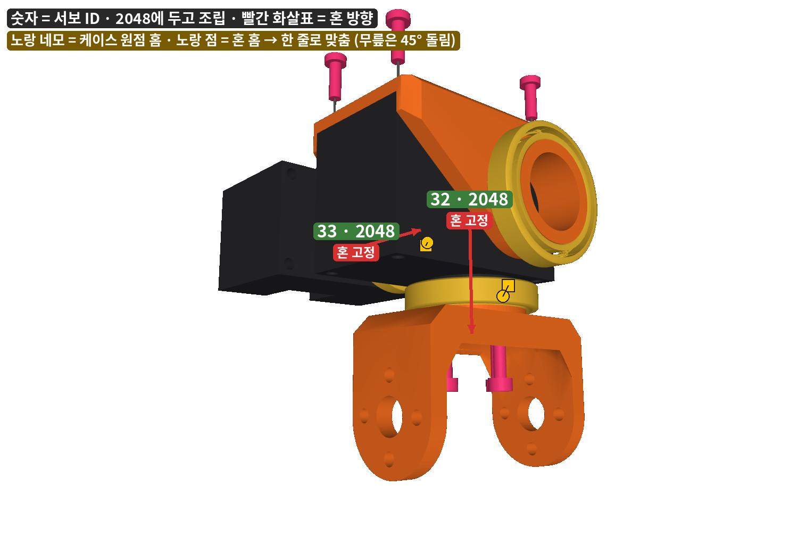
lsk0522/microduck · docs/assembly · 비공식 · 원본 CAD 기반 추정21 / 35
목·머리MICRODUCK 조립 가이드STEP 12 / 16
12
머리 블록을 머리 피치 혼에 장착
부품
11단계 서브조립
하드웨어 (계산 길이)
M2×6×8 XL330 동봉 탭볼트 (6·8 모두 8)
다이나믹셀 — 2048(토크 켬)에 두고 체결
31 머리 피치 혼 고정 2048 · 혼 → 왼쪽 + = 부리가 아래로 원점 A, 위 홈 → 위
원점 A = 홈 한 줄, B = 혼 홈 왼쪽 45° (무릎) — 8쪽 그림
머리 피치 서보(ID 31)를 2048에 두고 neck_pitch를 혼에 고정한다.
케이블 · 32→31을 머리 피치 서보(31)에 잇는다. 머리 요(32)를 양쪽 끝까지 돌려 케이블이 당기거나 끼지 않는지 확인.
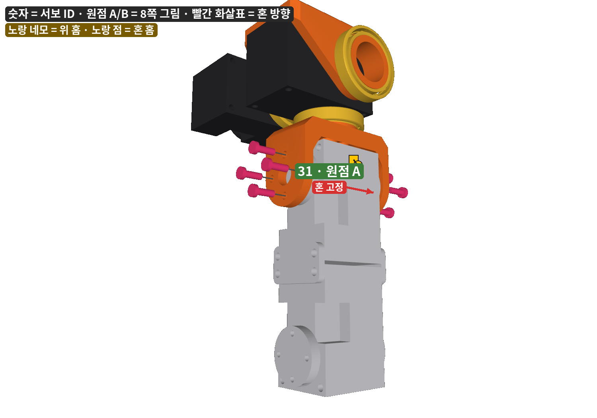
lsk0522/microduck · docs/assembly · 비공식 · 원본 CAD 기반 추정22 / 35
목·머리MICRODUCK 조립 가이드STEP 13 / 16
13
머리 프레임 (부리 서보, 모터 지지대, 아래 셸)
부품
motor_support
bottom_head_shell
XL330 (부리 ID 34)
하드웨어 (계산 길이)
M2.5×6×4 별도 구매
다이나믹셀 — 2048(토크 켬)에 두고 체결
34 부리 서보 장착 2048 · 혼 → 왼쪽 + = 부리가 열린다 (닫힘 −5°, 최대 +30°) 원점 A, 위 홈 → 뒤
lsk0522/microduck · docs/assembly · 비공식 · 원본 CAD 기반 추정28 / 35
전장MICRODUCK 조립 가이드부품 배치도
부품 배치도
셸은 투명, 서보 검정, 보드 청록, 배터리 회색. 선 = 0° 자세의 배선 경로 (다음 쪽).
노랑 = 서보 ID(커넥터 끝면) ·
파랑 = 전장 부품
옆 (오른쪽에서 봄, 앞 = 오른쪽)정면
위치 (mm, 몸통 원점 · X 앞 Y 왼 Z 위) — SBC (Radxa Zero 3W) (+68, -0, +133) · HAT (버스 인터페이스) (+60, -1, +132) · 배터리 NP-F550 (-36, -0, -4) · 전원부 (퓨즈·스위치·허브) (-24, +0, +3) · 스피커 (-5, +1, +129) · IMU 브리지 ID 200 (-21, +0, -15) · 카메라 IMX219 (+81, -0, +131) · ToF VL53L8CX (+81, +22, +129) · 머리 IMU (+59, +0, +131) · 버스 허브 (권장 위치) (-24, +0, +15).
관절각 0 자세. 보드는 Pi Zero 2W 자리표시자(Radxa Zero 3W도 같은 65×30 mm). IMU 브리지·머리 IMU·카메라·ToF는 모델의 site 위치, 허브는 권장 위치.
무거운 것(배터리, 서보 15 × 18 g)을 옮기면 HOME_FRAME과 정책을 다시 맞춘다 (plan.md 4·6.4절).
lsk0522/microduck · docs/assembly · 비공식 · 원본 CAD 기반 추정29 / 35
전장MICRODUCK 조립 가이드배선 경로·케이블 길이
앞·오른쪽 위에서 — 0° 자세의 배선 경로
배선 경로 · 케이블 길이
구간
0° mm
최대 mm
최대일 때
지나는 관절
여유
케이블
원본
HAT → 34
33
39
모든 관절 −끝
141
180 mm
34 → 33
103
112
모든 관절 +끝
68
180 mm
33 → 32
35
38
모든 관절 −끝
머리 요
142
180 mm
32 → 31
90
99
모든 관절 +끝
머리 피치
81
180 mm
= 원본
31 → 30
30
32
모든 관절 +끝
148
180 mm
= 원본
30 → 허브
139
156
모든 관절 −끝
목 피치
24
250 mm
= 원본
허브 → IMU 200
69
69
0°
111
180 mm
= 원본
허브 → 20
25
25
0°
155
180 mm
= 원본
20 → 21
88
88
0°
고관절 요
92
180 mm
= 원본
21 → 22
81
119
모든 관절 +끝
고관절 롤
61
180 mm
원본 78
22 → 23
7
9
웅크림
171
180 mm
23 → 24
70
70
0°
무릎
110
180 mm
허브 → 10
28
28
0°
152
180 mm
= 원본
10 → 11
83
83
0°
고관절 요
97
180 mm
= 원본
11 → 12
80
119
모든 관절 −끝
고관절 롤
61
180 mm
원본 76
12 → 13
7
8
모든 관절 −끝
172
180 mm
13 → 14
69
69
0°
무릎
111
180 mm
커넥터 끝면 뒤 9 mm 점끼리, 부품 메시를 1 mm 부풀린 빈 공간에서 1 mm 격자 최단 경로 (skimage MCP). 자세: 0°, 모든 관절 ±끝, 웅크림, 무릎·머리 요·목 피치 끝.
여유 = 180 mm − 최대. 원본 = 같은 계산을 원본 메시로 (빈 칸은 계산 안 함). 16 / 17가닥은 동봉 X3P 180 mm로 30 mm 이상 남는다.
가닥 수 17 (머리·목 6, IMU 1, 다리 5×2) − 서보 동봉 15 = 2가닥 추가 (그중 1가닥은 30 → 허브용 250 mm).
관절을 지나는 구간은 회전 중심 가까이로 지나게 하고 가동 범위 끝까지 돌려 당김이 없게 고리를 남긴다.
고관절 롤 → 피치(21→22, 11→12)는 롤을 끝까지 돌리면 0°보다 38 mm 길어진다 — 여유 61 mm 중 고리로 남긴다.
lsk0522/microduck · docs/assembly · 비공식 · 원본 CAD 기반 추정30 / 35
전장MICRODUCK 조립 가이드케이블 간섭·꽂는 순서
케이블 간섭 검사
커넥터 끝면 앞 0–7 mm(플러그)·7–14 mm(굽힘) 상자에서 다른 부품이 차지하는 비율, 관절각 0 + 관절별 끝 자세 28개 중 최대. 원본 = 같은 계산을 원본 메시로.
ID
관절
플러그 칸
굽힘 칸
원본
가장 많이 가리는 것
꽂는 때
10
오른 고관절 요
26%
61%
같음
배터리
5단계
11
오른 고관절 롤
0%
0%
같음
12
오른 고관절 피치
47%
62%
같음
서보
3단계
13
오른 무릎
3%
13%
같음
허벅지
14
오른 발목
15%
79%
같음
서보
2단계
20
왼 고관절 요
26%
61%
같음
배터리
5단계
21
왼 고관절 롤
0%
0%
같음
22
왼 고관절 피치
47%
62%
같음
서보
3단계
23
왼 무릎
3%
13%
같음
허벅지
24
왼 발목
15%
79%
같음
서보
2단계
30
목 피치
82%
94%
같음
서보
9단계
31
머리 피치
82%
94%
같음
서보
9단계
32
머리 요
12%
28%
같음
머리 아래 셸
33
머리 롤
21%
24%
같음
머리 윗셸
34
부리
16%
18%
같음
머리 아래 셸
● 초록 40 % 미만 · 주황 40–75 % · 빨강 75 % 이상 (둘 중 큰 값). 15개 모두 원본과 같다 — 재설계로 생긴 막힘은 없고,
막힌 곳은 원본 배치에서 온 것이라 꽂는 순서로 해결한다.
꽂는 순서 (조립 단계에도 적혀 있다)
2단계 — 13→14 · 23→24를 발목 서보에 먼저 꽂는다. 무릎 끝 자세에서 굽힘 칸이 79 % 가려진다 → 무릎 축 쪽으로 고리
3단계 — 서보를 넣기 전에 고관절 피치(12·22)와 무릎(13·23) 케이블을 꽂는다. 넣은 뒤엔 무릎 서보가 12·22 앞을 47 % 막는다
5단계 — 허브→10·20, 10→11·20→21을 꽂아 둔다. 8단계에 배터리가 들어오면 굽힘 칸이 61 % 가려진다
8단계 — 허브를 전원부 위에 두고 XT30·다리 2갈래·IMU 브리지를 꽂는다. 배터리는 마지막
9단계 — 옆판을 닫기 전에 31→30, 30→허브(250 mm). 닫으면 두 끝면이 1 mm로 마주봐 플러그 칸이 82 % 막힌다
목표각 = 기본 자세 + action_scale(걷기 0.9) × 액션 × (7.4 V / 배터리 전압) 보정
1차 로우패스 (다리 0.7, 머리 0.5 — robotd.toml 기본값) → Sync Write. 부리는 정책 밖에서 따로 (−5°…+30°)
서보 내부 위치 P 제어: kP 200, I = D = 0 (서기는 kP × 0.8). 시뮬레이션에서는 kp 0.55 N·m/rad에 해당
⚠ 로우패스: robotd.toml은 "정책이 이 값으로 학습됨"이라 하고, microduck_rl AGENTS.md는 "필터 없이 학습"이라 한다 (2026-10 기준 두 저장소가 다름).
직접 학습한 정책을 쓰면 학습 설정과 런타임 필터를 맞춘다.
자주 쓰는 명령 (로봇 SSH)
robotctl health 상태 · robotctl monitor 관절·IMU·루프 속도 robotctl relax --yes 토크 끔 (넘어짐 주의) · robotctl policy load walk <org/name> sudo systemctl stop robotd && sudo /opt/robot/daemon/current/bin/robotd init && sudo systemctl start robotd 레지스터 재설정
lsk0522/microduck · docs/assembly · 비공식 · 원본 CAD 기반 추정33 / 35
시뮬레이션MICRODUCK 조립 가이드시뮬레이션 방법
시뮬레이션 방법 — 쉬운 것부터
레벨
무엇
명령 (저장소 루트 / Windows 메뉴)
필요
확인할 것
1
모델 보기, 원점·기본 자세
uv run python -m mujoco.viewer --mjcf=cad/reference/microduck/scene.xml START_HERE 1
CPU
키프레임 INIT = 모든 서보 2048 (원점 그림과 같음), STAND·SIT·FOLD. Control 슬라이더로 관절을 + 쪽으로 밀어 + 방향 표와 비교
1
자세 유지 토크 점검
uv run python sim/check_model.py --servo xl330 --vin 7.4 --key STAND START_HERE 2
CPU
관절별 필요 토크 vs XL330 정지토크
2
학습된 정책을 키보드로
uv run scripts/infer_policy.py --walking walk.onnx --standing stand.onnx (microduck_rl) START_HERE 9
CPU, Linux 권장
걷기·서기. --save-csv로 기록해 실물과 비교, --no-bam으로 이상적 PD와 비교
3
실제 런타임 + MuJoCo 몸체
scripts/duck-sim → drive 0.15 0 · ctl health · monitor · down (microduck)
Linux, Rust
robotd·정책 전환·안전 로직이 실물과 같은 코드로 돈다. 버스·카메라 드라이버는 빠짐. 실시간 1.0× 미만이면 넘어진다
학습
걷기 정책 학습
uv run train Mjlab-Velocity-Flat-MicroDuck --env.scene.num-envs 4096 → play → scripts/export.py START_HERE 10 (HF Jobs: --hf-jobs)
NVIDIA GPU
4096 환경 1–2시간이면 쓸 만한 보행. 배포는 export.py로 만든 ONNX만, Backlash 변형 우선
시뮬레이션 ↔ 실물 맞추기
원점: 실물 dxl_zero.py zero --all 모양 = 뷰어 INIT 모양
부호: 관절 하나를 + 쪽으로 — 뷰어 슬라이더와 실물 robotctl monitor가 같은 쪽이어야 한다
기본 자세: 실물 dxl_zero.py home --all = 런타임 DEFAULT_POSITION
동특성: 같은 명령 순서를 시뮬(--save-csv)과 실물에서 → 관절각·기울기 비교.
차이가 크면 백래시(±1°), 마찰, 지연(3–6틱), 전압 강하 순으로 의심 (plan.md 5.4절)
액추에이터 모델
학습과 duck-sim은 Rhoban BAM 모델(전압 제어 + 부하에 따른 마찰)을 쓴다. 저장소 MJCF의 chosen_actuator는
위치 액추에이터 kp 0.55 N·m/rad, 토크 한계 ±0.96 N·m (서보 kP 200 상당). 서보를 바꾸거나 전원을 5 V로 내리면(D1-B)
액추에이터 모델을 다시 맞추고 재학습해야 한다 — 서보 1개로 BAM 측정 (plan.md 3.2절).
Windows에서는 레벨 1만 확실히 된다. 레벨 2·3·학습은 Ubuntu(또는 WSL2) 기준 — 명령은 plan.md 5·6절.
lsk0522/microduck · docs/assembly · 비공식 · 원본 CAD 기반 추정34 / 35
부록MICRODUCK 조립 가이드확인 필요 · 출처
모델에서 확인되지 않은 체결
원본 메시에 짝이 맞는 구멍이 없어 이 가이드가 수량을 세지 못한 곳이다. 첫 조립 때 실물로 확인하고 docs/build-log.md에 기록한다.
위치
모델에서 보이는 것
좌·우 몸통 셸끼리
Ø3.1–3.7 계단 구멍 + Ø1.6 — 나사 또는 위치결정 핀
허벅지 출력물 (upper_leg)
Ø2.34 ×2 + Ø5.27 카운터보어 ×2 — 짝 구멍 없음
HAT ↔ 보드
HAT에 Ø2.7 ×4 (Pi 규격) — M2.5 스페이서 적층 추정
카메라 M12 홀더
Ø2.0 ×3
motor_support ↔ 머리 서보, 부리 서보 고정
짝 구멍 없음
스피커, 배터리 플레이트, TPU 밑창·부리
구멍 없음 — 접착·끼움
계산 방법
부품 메시 43종을 0.4 mm 간격으로 X·Y·Z 단면 → 원형 구멍(진원도 > 0.93) 검출 → 관절각 0° 조립 상태에서 같은 축의 구멍을 묶어 나사 1개로 → 머리 자리(카운터보어)·통과 구멍·탭 구멍 깊이로 길이 계산(물림 4–5.5 mm, 바닥 닿기 전 0.4 mm).
코드: docs/assembly/tools/find_holes.py, find_screws.py
출처
Pollen Robotics microduck_rl — MJCF·STL (메시 CC BY-NC-SA 4.0, 코드 Apache-2.0)